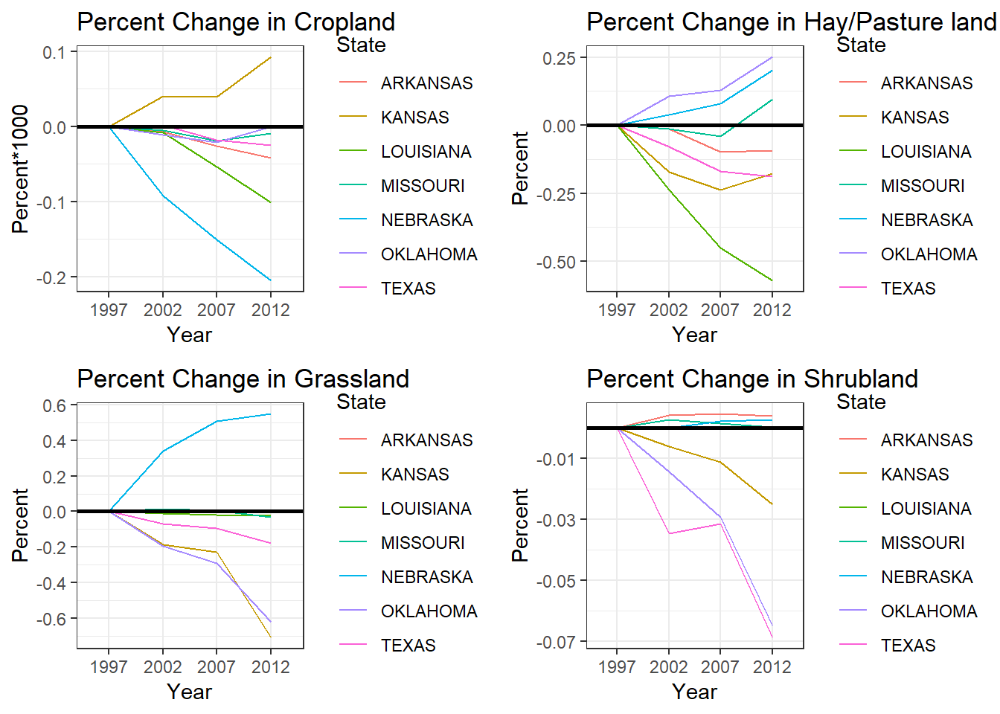

Figure 1a. This figure was created using ArcGIS. The main map is an illustration of the ‘Change in Percent Area Treated with Herbicide from 1997 to 2012’. The red shade indicates an increase in area treated while the green shade illustrates counties where area treated with herbicide has decreased.
Figure 1b. Shows the changes in state-level percent area treated with herbicide.
Figure 2a. This map was created in ArcGIS and illustrates changes in land use in Grassland, Shrubland, Hay/Pasture Land, and Cropland from 1997 to 2012. The red shade represents loss of certain land types, while a green shade represents a gain of that land type. Grey color indicates no signifianct change.

Figure 2b. These 4 graphs represent a state level ‘Percent Change in land cover from 1997 to 2012’ for Cropland, Hay/Pasture land, Grassland, and Shrubland. The percent changes are relative to the value each state had in 1997.
Link to Table with all the percent value of each land cover type.
*The range of cropland change, as seen in Fig. 2a and Fig. 2b, is very little.
*There was noticable increases of grassland in Nebraska, eastern Missouri, and some southern parts of Texas. While, majority of Loiusiana and Arkansas had no significant changes in their grassland, the rest of the states had lost some percentage of grasslands. Western Kansas, and Oklahoma lost the most grasslands.
*The eastern states, specially Nebraska, Arkansas, and Loiusiana had no significant changes in Shrubland. While, some western counties in Texas shows some increase, Fig. 2b shows Texas, along with Oklahoma, are among the states loosing the most shrubland.
*For hay and pastureland, the central part of the states showed some increase. Loisiana lost the most while, Oklahoma gained the most hay and pastureland.
*Note: While the land cover changes are helpful to see the changes in time, it is important to understand the maps limitation. First, the resolution of the map is at 250m, and with a finer resolution, more accurate results can be calculated. Second, these land cover maps were generated by remote sensing which can have inaccurate interpretation of the attributes of the land.
The rise of percent acres treated with herbicide may contribute to monarch butterflies unable to complete their migration. All states within the project site showed an increase in acres treated, and almost all counties experianced certain amount of increases. If more acres of land are treated with herbicides, it is likely that many broadleaf plants that monarch rely on during their migration are declining.
Cropland, which was previously expected to decline the most, was actually the land cover that experianced the lowest change. However, grassland, hay/pasture land, and shrubland exprianced decline. While Fig. 2b illustrates an imperfect balance of percent increase and decrease (with the exception of shrubland), the increases of all these land covers are concentrated on very few counties. Most of the counties within the project site experianced decline in all forms of land cover. The migratory route of monarch’s is very large, and increases in some counties is likely to prove insignificant to them. It is also likely that the decrease in all these land cover would result in the decrease of floral abvailability.
It is interesting to note the relation between the two maps: Fig. 1a and Fig. 2a. For example, western Kansas had a steep increase in percent acres treated with herbicides, but the area also lost a lot of grassland and a little shrubland and hay/pastureland. These patterns could indicate that more and more croplands were beginning to be treated with herbicides.
While these results help in building a context of the area where monarch’s fly during their migration, is it difficult to predict if these changes really affect monarch butterflies. While it can be likely that these changes do seem to be detrimental to monarch butterflies, further research regarding the count of monarch butterflies in these states, and research that directly corresponds these changes to floral availability could provide more accurate corelation. However, the data regarding moanrch count and floral resources have their own uncertainties and are not readily available. But with the dataset that this project dealt with, the changes in herbicide use and land cover does appear to hinder monarch’s availability to find floral resources.